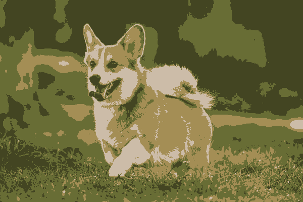
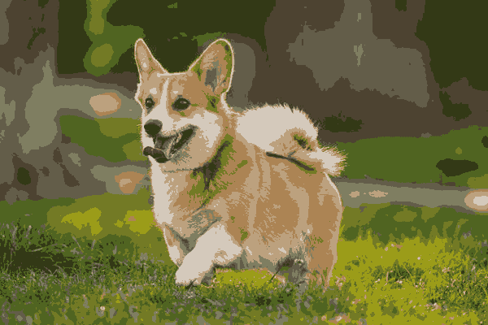
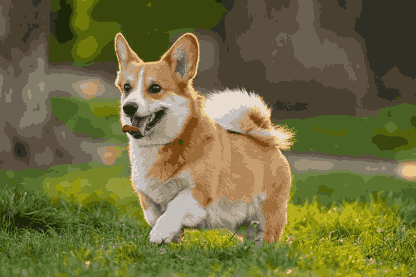

K-Means clustering
Today the y column disappeared. Every model so far was handed the answers and scored on how often it reproduced them; K-Means is handed a table of numbers and nothing else, and its whole job is to split the rows into K groups that are as tight as possible. We walked the algorithm through its five steps, met WCSS - the one number it minimises - saw why a lower WCSS is never a reason to raise K, and used the elbow to choose K honestly. Then we ran it twice: on 41,188 bank customers, and on the 240,000 pixels of a photograph. This page is the code from class, cell by cell, with the outputs we actually saw.
Open Class Code
Today's class had two notebooks. Open them from the repository for August 23, 2026:
| notebook | what it covers |
|---|---|
| kmean1_23_08_2026.ipynb | The theory, then clustering 41,188 bank customers and reading the groups |
| kmean2_23_08_2026.ipynb | Clustering the pixels of an image - colour compression |
y, no accuracy, and no train_test_split. It describes the shape of your data, and the value it produces is entirely in what you notice once it has finished.
The imports at the top of both notebooks are the familiar block:
import pandas as pd
import numpy as np
import matplotlib.pyplot as plt
import seaborn as sns
from IPython.display import display
from sklearn.tree import DecisionTreeClassifier
from sklearn.metrics import accuracy_score, confusion_matrix
from sklearn.tree import export_text
from sklearn.ensemble import RandomForestClassifier
from sklearn.datasets import load_iris
from sklearn.model_selection import train_test_split
from sklearn.metrics import classification_reportAnd the two lines that are new today:
from sklearn.cluster import KMeans
from sklearn.preprocessing import StandardScalerKMeans lives in sklearn.cluster, not in sklearn.neighbors where KNeighborsClassifier lives. The two get confused constantly, and the import path is the first hint that they are different animals - cluster is a whole module of unsupervised models.The versions the notebook printed, which matter for one default we will meet in topic 9:
Unsupervised learning - no answers at all
K-Means is an unsupervised algorithm. Its purpose is to split the data into groups - clusters - by similarity between the points. Nobody tells it in advance what groups exist, or what they mean. It only divides the points so that each group is internally homogeneous and different from the others.
You provide the answers. Success is measurable:
accuracy_score, r2_score. KNN, trees, SVM, regression.There are no answers, so there is nothing to be right about. K-Means, DBSCAN, hierarchical clustering, PCA.
Nothing is being predicted, so there is no test set to hold back and no score to report.
group_1, group_2 and so on - in scikit-learn, plain integers 0, 1, 2. Whether cluster 2 turns out to be "young high-earners" or "customers who never pick up the phone" is something you work out afterwards, by looking at the averages of each group.
The name is a complete description of the algorithm:
| the name | what it means |
|---|---|
| K | How many groups you want. You choose it - the algorithm never does. Topics 4 to 6 are entirely about how to choose it well. |
| Means | How each group's centre is computed: the plain arithmetic average of the rows currently in it. That average point is called the centroid. |
The whole model, in four lines:
from sklearn.cluster import KMeans
kmeans = KMeans(n_clusters=3, random_state=42, n_init=10)
labels = kmeans.fit_predict(X) # note: no y anywhere
df['cluster'] = labels # glue the answer back onto the frameheight and width. Tall thin people gather in one corner, short wide people in another, heavy tall people in a third. K-Means draws the circles round those three groups - without ever being told that "tall and thin" is a category that exists.The algorithm, step by step
The whole thing is a loop of two moves that take turns. Assign holds the centres still and colours the points; update holds the colours still and moves the centres. Repeat until nothing changes.
| step | what happens |
|---|---|
| 1. Initialization | Choose the number of clusters K, and place K starting points (the centroids) at random positions in the space. |
| 2. Assignment | Every data point joins the nearest centroid, measured by Euclidean distance. |
| 3. Update | Each centroid is recomputed as the mean of all the points currently assigned to it - so it moves to the middle of its own group. |
| 4. Reassignment | Check again: any point that is now closer to a different centroid switches over to that group. |
| 5. Repeat | Go back to step 3 and keep going until no point changes group between one pass and the next - or until max_iter passes have been used. |
The distance in step 2 is the same one KNN used - Pythagoras, in as many dimensions as you have columns:
Straight-line distance from a point \(x\) to a centroid \(c\). The point joins whichever centroid gives the smallest \(d\).
And the mean in step 3 is exactly what it sounds like - the average of each column, over the rows in that cluster:
The new centroid of cluster \(j\) is the average of its points. This is the "means" in K-Means.
Optimal K and the sum of squared distances
Up to now we chose K by hand, arbitrarily. Now we want to choose it intelligently. The problem is that unlike supervised learning, we have no correct answers to compare against - so there is no accuracy to compute. Instead we use an internal measure: how close the points are to their own cluster's centre.
For every cluster, take every point's distance to its centroid, square it, and add all of them together.
The same quantity is spelled three ways, and they all mean this one sum:
| name | where you meet it |
|---|---|
| SSD | Sum of Squared Distances - the name used in the slides. |
| WCSS | Within-Cluster Sum of Squares - the name used on the elbow plot's y-axis. |
| inertia_ | What scikit-learn calls it, as an attribute on the fitted model. |
The smaller this sum, the tighter the clusters - a sign that the points really do sit close to their centres, and that the grouping is a good one.
A simple example: if a cluster has 5 points that are all close to its centre, the sum will be low. Another cluster whose points are spread out gives a higher sum, and the computer takes that as a sign the cluster is less good.
Increasing K - and why the score is a trap
Here is the problem with choosing K by minimising WCSS. If we keep increasing the number of clusters, the value we are measuring keeps falling. Why? Because every point can get closer to a centre when there are more centres to choose from - never further.
Push it to the extreme: set K very large, so large that every single point becomes its own cluster. Then every distance is zero, and the SSD is zero - a "perfect" model.
So the question is never "which K gives the lowest WCSS" - the answer to that is always "as many clusters as you have rows". The right question is "where does the improvement stop being worth it", and that question does have a real answer.
The elbow method
To find the most suitable number of clusters we use a technique called the elbow method. Build a graph with the number of clusters on the X axis and the WCSS on the Y axis. Then look for the point where the improvement stops being meaningful - the place where the curve bends, which looks like an elbow. From there on, every extra cluster adds very little to the quality of the model, so that is where you stop.
Each new cluster is separating genuinely different groups. The score improves a lot.
The last K that bought a real improvement. This is your answer.
Each new cluster is cutting a real group in half. The score improves; the meaning does not.
silhouette_score(X, labels) scores each point on how much closer it is to its own cluster than to the next nearest one, and averages. It runs from −1 to 1, higher is better, and unlike WCSS it does not automatically improve with K - so it can be maximised directly. It is much slower on large data, which is why the elbow stays the everyday tool.
Notebook 1 - loading and encoding the bank data
The first notebook clusters bank-full.csv - 41,188 marketing calls made by a Portuguese bank, one row per customer contacted. The frame mixes numeric columns (age, duration, euribor3m) with text columns (job, marital, education, ...):
import pandas as pd
import sklearn
from sklearn.cluster import KMeans
from sklearn.preprocessing import StandardScaler
# Load the data
df = pd.read_csv("bank-full.csv")
df_encoded = pd.get_dummies(df, drop_first=True)
df_encoded.describe().T
df['job'].unique()pd.get_dummies is exactly the tool from lesson 20, and it is needed here for the same reason: K-Means only accepts numbers. Every text column is replaced by one 0/1 column per category, and drop_first=True throws away one category from each - the information is still there, since "not any of the others" identifies the missing one.
| call | what it does here |
|---|---|
| pd.get_dummies(df, drop_first=True) | Encodes every text column it finds - no columns= argument, so pandas decides. Dozens of columns come out. |
| df_encoded.describe().T | A look at the result. .T transposes it so each column becomes a row - readable when there are fifty of them. |
| df['job'].unique() | A sanity check on one text column before it is encoded: which job titles exist, and therefore how many columns job is about to become. |
df keeps the original, readable columns; df_encoded is the all-numeric version. That split matters in topic 9 - we fit on the numeric frame and store the answer on the readable one, so that the cluster profiles come out in real units instead of dummy columns.
StandardScaler - and why it is not optional
scaler = StandardScaler()
features = df_encoded.columns
df_scaled = pd.DataFrame(scaler.fit_transform(df_encoded), columns=features)
df_scaledK-Means is nothing but distance. Look at what the raw columns of this frame actually contain:
| column | typical value | contribution to a squared distance |
|---|---|---|
| nr.employed | ~5,200 | enormous |
| pdays | 999 or ~7 | very large |
| duration | ~260 | large |
| age | ~40 | small |
| job_technician | 0 or 1 | invisible |
Without scaling, the distance between two customers is essentially the difference in nr.employed and nothing else. Every one-hot column - all the work get_dummies just did - would be worth less than a rounding error. StandardScaler converts every column to a z-score, so each one has mean 0 and standard deviation 1, and each one gets an equal say in the distance.
| line | what it does |
|---|---|
| scaler.fit_transform(df_encoded) | Learns each column's mean and standard deviation, then returns the standardised values - as a plain numpy array, with no column names. |
| features = df_encoded.columns | Keeps the names before they are lost. |
| pd.DataFrame(..., columns=features) | Wraps the array back into a frame so the names come back. Not required by KMeans, but it makes everything after this readable. |
StandardScaler is the usual choice for K-Means, because the algorithm is built on squared distances and z-scores put every column's spread at 1. MinMaxScaler works too and leaves the 0/1 dummy columns exactly as they were - but it lets a single outlier squash every other value into a narrow band.
fit_predict and the cluster sizes
k = 5
kmeans = KMeans(n_clusters=k, random_state=42, n_init=10)
df['cluster'] = kmeans.fit_predict(df_scaled)
cluster_sizes = df['cluster'].value_counts()
print("\nCluster sizes:")
print(cluster_sizes)
print("\nPercentage of total:")
print(round(cluster_sizes / len(df) * 100, 2))Read the line that does the work: fit_predict is fit and predict in a single call, it runs on df_scaled, and its answer is stored on df - the original, readable frame. That is deliberate, and it is what makes topic 10 possible.
| argument | what it does |
|---|---|
| n_clusters=5 | K. The only genuinely free choice, and here it was picked by hand before we had looked at an elbow plot at all. |
| random_state=42 | Fixes the random starting positions, so re-running the notebook gives the same clusters. Without it, the cluster numbers - and sometimes the clusters themselves - change on every run. |
| n_init=10 | Run the whole algorithm 10 times from 10 different random starts and keep the one with the lowest inertia. This is the insurance against a bad start. |
n_init matters. The algorithm is guaranteed to converge; it is not guaranteed to converge to the best answer. Two centroids that start inside the same blob will politely split that blob between them and never venture out, while another blob is left sharing a single centroid. Nothing about that arrangement is unstable - no point wants to move - so the loop stops, satisfied, on a bad answer. That is a local minimum, and running ten times and keeping the best is the standard defence.
n_init out gives you 10 with a warning about the default changing. Since version 1.4 the default is n_init='auto', which uses 1 run with the default k-means++ initialisation and 10 otherwise. Writing n_init=10 explicitly works on every version and is what you will see in most code.
Profiling the clusters with groupby
Fitting was the easy part. The output is a column of 0s to 4s, and it is worth nothing until somebody works out what each number is. This is the single most useful cell in the notebook:
# research groups
numerical_cols = ['age', 'duration', 'campaign', 'pdays', 'previous',
'emp.var.rate', 'cons.price.idx', 'cons.conf.idx',
'euribor3m', 'nr.employed']
cluster_means = df.groupby('cluster')[numerical_cols].mean()
print("\nNumerical feature means by cluster:")
print(cluster_means)Now read the table, looking for the row that is different:
| column | what it tells you |
|---|---|
| age | 38.9 to 41.8 across all five clusters. Age is doing nothing here - it did not separate anybody. |
| pdays | Days since the customer was last contacted, where 999 means "never". Four clusters sit at exactly 999.0. Cluster 3 sits at 7.3. |
| previous | How many times contacted before. Zero-ish everywhere; 1.67 in cluster 3. |
| duration | Call length in seconds. Cluster 3 has the longest calls of the five, at 321 against 233-271 elsewhere. |
| euribor3m | The interest rate at the time of the call. This one splits cleanly: clusters 0, 1 and 4 around 4.6-5.0, clusters 2 and 3 around 1.0-1.2. It is separating when the call was made, not who was called. |
n_init, add a row, and the same customers may come back as cluster 0. Never hard-code "cluster 3 = warm list" anywhere - re-derive the meaning from the group averages every time you fit.
groupby('cluster').mean(), then write one sentence per cluster in plain language before doing anything else. If you cannot write the sentence, the clustering has not told you anything yet - which is a signal to change K, change the columns you fed it, or accept that these customers do not come in groups.
countplot - the picture of the sizes
# Set a nice style for the graph
sns.set_theme(style="whitegrid")
# Create the figure and define its size
plt.figure(figsize=(8, 5))
# Create a bar plot counting how many data points are in each cluster
# We use x='cluster' so it counts the groups on the X-axis
ax = sns.countplot(data=df, x='cluster', palette='viridis')
# Add labels on top of each bar so you can see the exact count easily
for container in ax.containers:
ax.bar_label(container)
# Add titles and labels to make the graph easy to read
plt.title('Number of Customers in Each Cluster Group', fontsize=14, fontweight='bold')
plt.xlabel('Cluster Group', fontsize=12)
plt.ylabel('Count (Number of Customers)', fontsize=12)
# Display the graph on your screen
plt.show()This is value_counts as a picture. Three details are worth keeping:
| line | why it is there |
|---|---|
| sns.countplot(data=df, x='cluster') | A countplot counts rows per category itself - you give it the column, not the counts. No value_counts needed first. |
| for container in ax.containers: ax.bar_label(container) | Writes the exact number on top of each bar. A bar chart without its numbers makes you squint at the axis; this is two lines and removes the guesswork. |
| palette='viridis' | A colour ramp that stays readable in greyscale and for colour-blind readers. On newer seaborn versions this needs hue='cluster', legend=False alongside it, or it warns. |
k = 6 model was still in df['cluster'], before the K = 5 fit above it was re-run. The totals give it away: both add up to 41,188, the same customers, cut a different number of ways. In a notebook, the picture on your screen is only as current as the last cell you executed. When a chart and a printout disagree, restart the kernel and run everything top to bottom.
The elbow loop, on the real data
# 1. Create an empty list to store the WCSS values
wcss = []
# 2. Run KMeans for 1 to 10 clusters
# We use a loop to try different values of k
for i in range(1, 11):
kmeans = KMeans(n_clusters=i, random_state=42, n_init=10)
kmeans.fit(df_scaled)
# .inertia_ gives the WCSS for that model
wcss.append(kmeans.inertia_)
# Set a nice style for the graph
sns.set_theme(style="whitegrid")
plt.figure(figsize=(8, 5))
# 3. Plot the Elbow Graph
# We use a line plot with blue dots ('bx-') to show the trend
plt.plot(range(1, 11), wcss, 'bx-', linewidth=2, markersize=8)
# 4. Add titles and labels
plt.title('The Elbow Method for Optimal K', fontsize=14, fontweight='bold')
plt.xlabel('Number of Clusters (K)', fontsize=12)
plt.ylabel('WCSS (Within-Cluster Sum of Squares)', fontsize=12)
# Make sure all numbers from 1 to 10 show up on the X-axis
plt.xticks(range(1, 11))
# Display the graph
plt.show()Ten complete fits, one per K, each one keeping a single number. Note that this loop calls fit rather than fit_predict - we do not want the labels here, only inertia_.
| detail | why |
|---|---|
| range(1, 11) | K from 1 to 10. K = 1 is the useful baseline: every point measured to the overall mean, which is the total spread of the data. |
| kmeans.fit(df_scaled) | On the scaled frame, and on the same frame every time. Change the scaling between fits and the numbers are no longer comparable. |
| 'bx-' | Matplotlib shorthand: blue, x markers, solid - line. Three characters instead of three keyword arguments. |
| plt.xticks(range(1, 11)) | Forces a tick on every integer. Without it matplotlib labels 2, 4, 6, 8, 10 and you cannot read off an odd K. |
And here is what the curve actually did on our data. The WCSS slid from about 2.23 million at K = 1 down to about 1.59 million at K = 10 - a long, almost straight descent, with a small kink around K = 6-7 and no real corner anywhere.
n_init=10 it is a hundred runs of the algorithm. When you are only exploring the shape of the curve, df_scaled.sample(5000, random_state=42) gets you the same shape in a fraction of the time.
Notebook 2 - an image is a table
The second notebook is the demo that makes clustering click. Its imports:
import numpy as np
import matplotlib.pyplot as plt
import matplotlib.image as mpimg
from sklearn.cluster import KMeans
from PIL import Image# Load the image
image = Image.open("dog_image.jpeg")
image_np = np.array(image)
print(image_np.shape)Read that shape carefully: 400 rows of pixels, 600 pixels across, 3 numbers per pixel - red, green and blue, each 0 to 255. Printing the array itself shows exactly that:
Now the trick. Flatten the first two dimensions and the picture becomes an ordinary dataset:
(400, 600, 3) → .reshape(-1, 3) → (240000, 3)
240,000 rows, three columns. Nothing about K-Means knows or cares that the rows are pixels.
cluster_centers_ comes back as four RGB triples - the four colours that best summarise the whole photo.

Four numbers per channel for the whole picture, and the dog is still unmistakably a dog. Those four centres are exactly the rows K-Means found:
| call | what it does |
|---|---|
| Image.open(...) | PIL opens the file. It is not a numpy array yet. |
| np.array(image) | Converts it into an array of uint8 values, shape (height, width, 3). |
| .reshape(-1, 3) | Three columns, and -1 means "work out the number of rows yourself" - 400 × 600 = 240,000. |
| plt.imshow(image_np) | Draws the array back as a picture. Needs whole numbers 0-255, which matters in the next topic. |
Notebook 2 - the exercise
The notebook sets the task in comments and leaves the code for you:
# task
# 1 Kmean - clusters: 4, random_state=42
# 2 reshape -- column of pixels
# 3 kmean.fit
# print kmeans.cluster_centers_ == 4
# print kmeans.labels_ == 240,000
# #1 -- group 0 -- color cluster_centers_[0] 122,50,70
# create new list with center sizesHere is the whole thing worked through:
from PIL import Image
import numpy as np
import matplotlib.pyplot as plt
from sklearn.cluster import KMeans
image = Image.open("dog_image.jpeg")
image_np = np.array(image)
print(image_np.shape) # -> (400, 600, 3)
# 2. every pixel becomes a row of three numbers
pixels = image_np.reshape(-1, 3) # -> (240000, 3)
# 1 + 3. cluster the colours
k = 4
kmeans = KMeans(n_clusters=k, random_state=42, n_init=10)
kmeans.fit(pixels)
print(kmeans.cluster_centers_.shape) # -> (4, 3) the palette
print(kmeans.labels_.shape) # -> (240000,) one index per pixel
# every pixel takes the colour of its own centre
new_pixels = kmeans.cluster_centers_[kmeans.labels_]
new_image = new_pixels.reshape(image_np.shape).astype("uint8")
plt.figure(figsize=(6, 4))
plt.imshow(new_image)
plt.title(f"Image with K = {k} Colors")
plt.axis("off")
plt.tight_layout()
plt.show()| line | the detail that trips people up |
|---|---|
| reshape(-1, 3) | -1 lets numpy compute the row count. Writing reshape(240000, 3) works for this one image and breaks on the next. |
| cluster_centers_[labels_] | Fancy indexing. It builds the full 240,000 × 3 array of repainted pixels in one expression - no loop. Read it as "for every pixel, look up the colour of its cluster". |
| .astype("uint8") | Not optional. The centres are floats, because a mean of integers rarely lands on one. imshow needs whole numbers 0-255 or it renders a mess. |
| .reshape(image_np.shape) | Folds the flat table back into (400, 600, 3) so it is a picture again. |
Then run it for several K values and put them side by side - the exercise's k_values = [4, 10, 25, 50]:
k_values = [4, 10, 25, 50]
fig, axes = plt.subplots(1, len(k_values), figsize=(16, 5))
for ax, k in zip(axes, k_values):
km = KMeans(n_clusters=k, random_state=42, n_init=10).fit(pixels)
new = km.cluster_centers_[km.labels_].reshape(image_np.shape).astype("uint8")
ax.imshow(new)
ax.set_title(f"K = {k}")
ax.axis("off")
plt.tight_layout()
plt.show()

Read it left to right: the flat blocks at K = 4 break into shading by K = 10, the background stops banding around K = 25, and at K = 50 the only way to spot the difference is to flick back to the original.
MiniBatchKMeans is the drop-in replacement for exactly this case - it updates the centres from small random batches instead of the whole array, and gets a near-identical palette in a fraction of the time.
kmeans.cluster_centers_ for K = 4 and look at the four RGB rows - that is the palette, and you can paste those values straight into a colour picker. Then run np.bincount(kmeans.labels_) to see how many pixels landed in each colour: on most photographs one or two colours cover most of the frame, which is the "create new list with center sizes" line in the task.